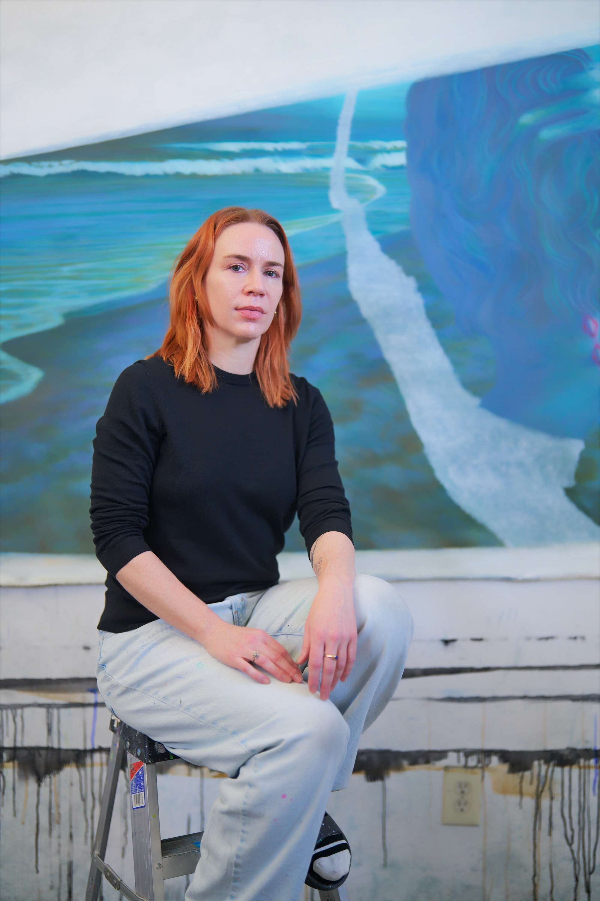

Tess Bilhartz works in painting, drawing, and installation. She builds on a lineage of art traditions, from horror to surrealism, that conceive a world beyond visible reality. Bilhartz grew up in Dallas, Texas and currently lives and works in Brooklyn, NY. Her work has recently been exhibited at Deanna Evans Projects, Primary, Embajada, Below Grand, and Island Gallery. She is represented by Deanna Evans Projects.
b. Dallas, Texas
Education
2017 Skowhegan School of Painting, Drawing, and Sculpture
2010 Boston University, MFA in Painting
2006 Haverford College, BA in Fine Arts, minor in Comparative Literature
Solo exhibitions
2026 Waves, public installation at Main Window Dumbo, presented by Deanna Evans Projects, Brooklyn, NY
2025 Now You See Me, Deanna Evans Projects, New York, NY
2022 Follow Me Down, Rubber Factory, New York, NY
2020 What On Earth, Below Grand, New York, NY
2017 On A Good Night, 0-0 Gallery, Los Angeles, CA
2016 Purple Nights, Arts and Leisure, New York, NY
Two-person exhibitions
2025 Blonde on Blonde, Tess Bilhartz and Margaux Ogden, SE Cooper Contemporary, Portland, OR
Selected group exhibitions
2025
Off-Kilter, presented by Deanna Evans Projects at Halsey McKay Gallery, East Hampton, NY
2024
Into The Abyss, Embajada, San Juan, PR
Meridian, Below Grand, New York, NY
Mighty Small, Front Gallery, Houston, TX
Appetites, curated by Peter Schenck, Brooklyn, NY
2023
Spring, Primary, Miami, FL
Material Art Fair, Embajada, Mexico City, Mexico
The Ouroboros of Looking, Heiress, Saint Petersburg, FL
2022
Tamo Aquí, Embajada, San Juan, PR
Circular Ruins, Island, New York, NY
2019
The Joke Is On You, Embajada, San Juan, PR
2018
Nothing Good Ever Happens After Midnight, Musa Collective, Boston, MA
New York Art Book Fair at MoMA PS1, Embajada, New York, NY
2017
The Landscape Show, Park Place, Brooklyn, NY
Domestic Tranquility, 0-0 LA, Los Angeles, CA
2016
Stone Soup Nasty, Orgy Park, Brooklyn, NY
Equinox, The Willows, curated by Sharona Eliassaf and Emily Wiener, Brooklyn, NY
Four Sided Triangle, Spring Break Art Fair, curated by Emily Kiacz, New York, NY
2015
If Grandpa Sucks We’ll Leave, Bannerette, Brooklyn, NY
Your Bad Self, Arts & Leisure, New York, NY
WHO, Lesley Heller Workspace, New York, NY
Peripheries, More Art Space, Oneata, New York
Residencies/ Grants/ Awards
2025
PSC Adjunct Professional Development Grant ('25, '20, '17)
2015
DNA Residency Program, Provincetown, MA
Rema Hort Mann Emerging Artist Grant nominee
2013
Sharpe Walentas Space Program, Brooklyn, NY
2008
Vermont Studio Center Residency and Fellowship
Press
2025
Portland Monthly, "Painting with Bob Dylan and Your Best Friend," Matthew Trueherz
Variable West, "Cliff Notes: Tess Bilhartz and Margaux Ogden: Blonde on Blonde", Jaydra Johnson
Yale University Radio, Tess Bilhartz interviewed by Brainard Carey
2022
The Brooklyn Rail, Tess Bilhartz: Follow Me Down, by Clare Gemima
BOMB Magazine, Fantasy and Reality, Tess Bilhartz interviewed by Kerri Ammirata
2020
Tzvetnik feature, What On Earth at Super Dutchess
2019
I like your Work Podcast, Episode 5: Tess Bilhartz: Collaboration, Film and Bob Dylan
Interviews + Writing
2024
BOMB Magazine, Huma Bhabha interviewed by Tess Bilhartz
BOMB Magazine, Margaux Ogden interviewed by Tess Bilhartz
2023
The Brooklyn Rail, Converge 45 reviewed by Tess Bilhartz
BOMB Magazine, Marie Watt interviewed by Tess Bilhartz
2022
BOMB Magazine, Wild Thoughts: Eunjung Park interviewed by Tess Bilhartz